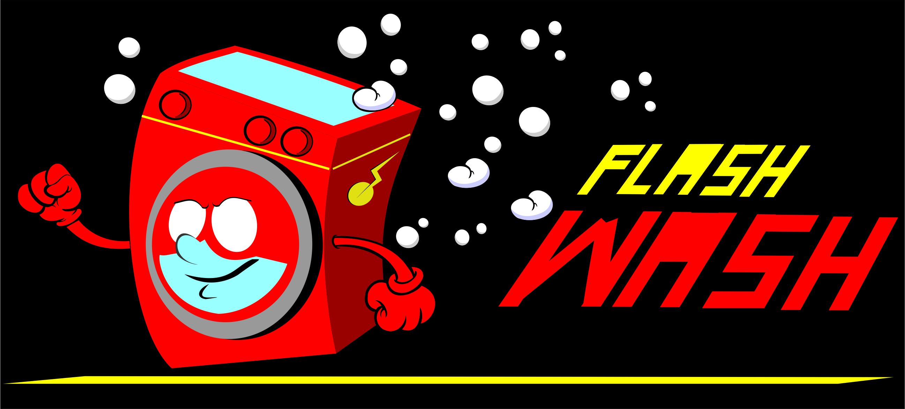
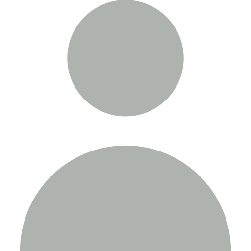
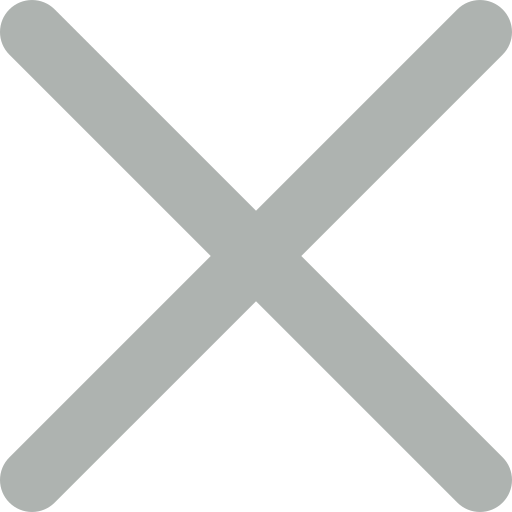

<ion-header style="z-index: 100;">
  <ion-toolbar color='primary'>
      <ion-buttons slot="start">
      <ion-button  (click)="openFirst()">
    
      <ion-icon name="menu"></ion-icon>
    </ion-button>
          
      </ion-buttons>


      


     <ion-input  placeholder="Busca una lavanderia" class="anchoDebuscador">

     </ion-input>
         
    
        
         

 

      <ion-buttons slot="end">
          <ion-button (click)=" this.efectos1.emitirMensaje()">
              
          </ion-button>

          
          <ion-button  *ngIf="this.efectos1.filActivo" (click)=" this.efectos1.ocultarFiltros()">
              
          </ion-button>


          <ion-button  *ngIf="!this.efectos1.filActivo" (click)="this.efectos1.verfiltros()">
              
          </ion-button>
      </ion-buttons>


  </ion-toolbar>
</ion-header>

<ion-content >


    <ion-menu side="start" menuId="first" style="position: fixed; z-index: 100;">

      <ion-header >
          <ion-toolbar color="dark">
            
            <ion-title>
              Menu
            </ion-title>
          </ion-toolbar>

      </ion-header>
      
        <ion-content color='secondary'>
           
          <ion-item color='secondary'  routerLink="{{p.url}}" (click)="closeFirst()"  *ngFor="let p of paginas"  >
            
             {{p.titulo}}
          </ion-item>

           
             <ion-item color='secondary'  routerLink='/login'(click)="closeFirst()" *ngIf="!this.global.status_de_secion">
                
               Iniciar sesion
            </ion-item>

            <ion-item color='secondary'  (click)="cerraSecion()" *ngIf="this.global.status_de_secion" style="cursor: pointer;">
                
               Cerrar sesion
            </ion-item>
        </ion-content>
      </ion-menu>      

  <ion-router-outlet main></ion-router-outlet>


<div style="display: flex; flex-wrap: wrap; width: 100%;">
    
          <ion-toolbar style="text-align: center;">
             <ion-title style="color: #23374d;" class="centrar">
              
              Cerca de ti:</ion-title>
          </ion-toolbar>
      
      
            <div class="lavanderiaCont" *ngFor='let dd of lavandrias'>
              <div class="contImgLavanderia centrar">
                
              </div>
              <div style="width: 75%; font-size: 13px;">
                
                
                    <h4 style="margin: 5px; color: #1089ff; font-size: 17px;">
                      {{dd.nombre}}
                    </h4>       
                    
                    <p  class="statusClose">Lavado de ropa $40 por kilo</p>

                  
                  <ion-button color='medium' class="botonVermas"
                  (click)="irALavanderia()"
                  >Ver más</ion-button>        
              </div>
             
             
            </div>
      
            
            
          
      
      
</div>
        


<div class="filtroscontent" id="filtros">
    <ion-label style="color:gold;">Filtros de busqueda:</ion-label>
    
    
      <div  *ngFor='let fil of filtros' style="margin: 10px"
          (click)="this.efectos1.activaFiltro(fil)">
          
          <label class="container ">
              {{fil.opcion}}
             
            <div class="bu">
              
            </div>
          </label>
        </div>
     

      <div class="opciones">
        <ion-button style="margin-right:90px; "
        (click)="this.efectos1.ocultarFiltros()">
        Cancelar
      </ion-button>
        <ion-button color="success"
        (click)="this.efectos1.ocultarFiltros()"
        >Buscar</ion-button>
      </div>
    
  </div>
       

</ion-content>

